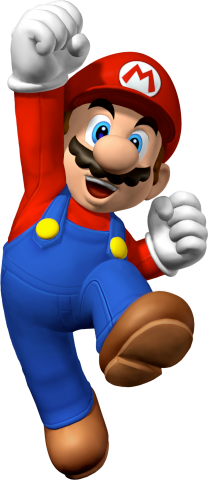

Mario

En su primer videojuego se dedicó a saltanar tones lanzados por un simio para así salvar a una princesa.
Sus juegos principales son:
- Super Mario Bros
- Super Mario Land
- Super mario 64
- Super Mario World
- Super Mario Sunshine
- Super Mario Galaxy
- Super Mario Odissey
- Super Mario Wonder